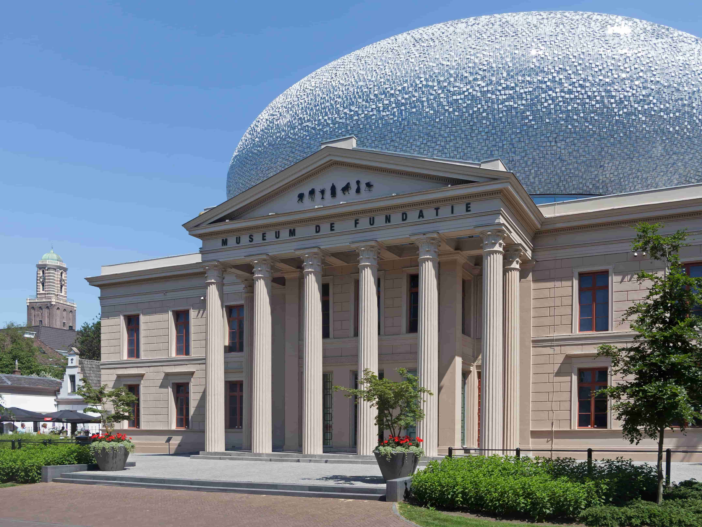

Dinoland Zwolle is een themapark in de Overijsselse stad Zwolle. Alles staat in het prk staat in het teken van dinosauriërs. Het richt zich voornamelijk op kinderen tot 14 jaar. De buitenomgeving van het park omvat speeltuigen en nagebouwde dinosauriërs. Binnen is onder meer een 'paleolab' waar 'edelstenen' gezocht kunnen worden. Dinoland ontving in het openingsseizoen 2016 bijna 100.000 bezoekers. De eigenaar kwam in 2018 met het plan een hostel met enige honderden bedden op het terrein te vestigen. Voorafgaand aan Dinoland was Ecodrome op de locatie gevestigd. In 2014 werd Stichting Summercamp Heino eigenaar.
Museum de Fundatie is een Nederlands museum voor beeldende kunst met twee locaties in Overijssel: aan de Blijmarkt in Zwolle en in Kasteel het Nijenhuis in Wijhe. Museum de Fundatie is onderdeel van de Stichting Hannema-de Stuers Fundatie. Een deel van de collectie is eigendom van de provincie Overijssel. In 2015 behaalde het museum het recordaantal bezoekers van 311.164, verdeeld over beide locaties. Directeur was van 2007 tot 2022 Ralph Keuning.
